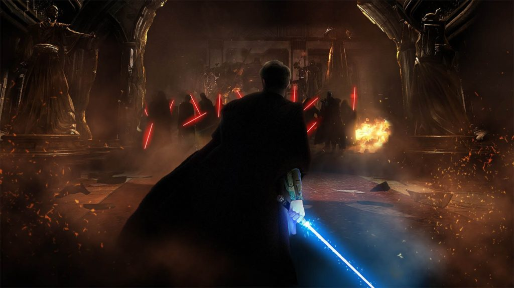

НОВОГОДНЯЯ АКЦИЯ! ОДИН ТОВАР ПО ЦЕНЕ ДВУХ!
КУПИТЬ
CREATING CAL’S FAVORITE SONG IN STAR WARS JEDI: FALLEN ORDER™
Ancient religion, spiritual mysticism, and powerful melodies. Together, these three visionary pillars make up one incredibly powerful form of cultural artistry: Mongolian heavy metal music! Or Star Wars. That, too. Though in this case, both!
When developing Star Wars Jedi: Fallen Order, the teams at Respawn Entertainment, EA and Lucasfilm wanted to flesh out the galaxy they were exploring, and part of that included music. In this case, we aren’t talking about the iconic scores made by Gordy Haab and Stephen Barton for Jedi: Fallen Order that play when you uncover a sprawling vista or engage in a climactic fight. We’re talking about music that the denizens of the galaxy listen to on their commutes or while working, including our very own Cal Kestis!